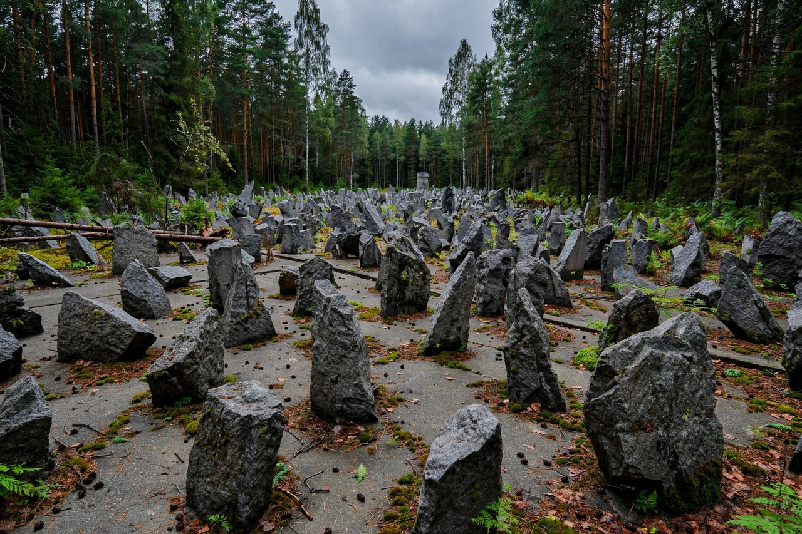

Treblinka extermination camp
| Treblinka extermination camp | |
|---|---|
 | |
| Location | Near Treblinka, occupied Poland |
| Operated | July 23, 1942 – October 19, 1943 |
| Commandants | Irmfried Eberl; Franz Stangl; Kurt Franz |
| Victims | Estimated 700,000–900,000 Jews, and around 2,000 Roma |
Treblinka was an extermination camp built and operated by Nazi Germany in occupied Poland during World War II. Between July 1942 and October 1943, an estimated 700,000 to 900,000 Jews were murdered there, along with about 2,000 Roma — more people than at any Nazi camp except Auschwitz-Birkenau. Together with Bełżec and Sobibór, it formed the killing centers of Operation Reinhard, the plan to murder the Jews of the General Government.
Operation
The camp lay in a forest northeast of Warsaw, connected by rail. Victims arrived by freight train, mostly from the Warsaw Ghetto during the Grossaktion of summer 1942, when roughly a quarter of a million Jews were deported to Treblinka in about two months. New arrivals were driven through a fenced path, nicknamed the "Road to Heaven" by the SS, to gas chambers disguised as shower rooms, where they were killed with carbon monoxide from a captured tank engine. Bodies were first buried in mass graves and later exhumed and burned on open-air pyres to conceal the crime.
Uprising and closure
On August 2, 1943, prisoners of the camp's underground organization revolted, seizing weapons from the armory, setting buildings ablaze, and storming the fences. Of roughly 840 prisoners, some 200 escaped the camp, though most were hunted down; about 70 are known to have survived the war. The camp was dismantled shortly afterward, the ground ploughed over and planted with lupins, and a farmhouse built to disguise the site.
Memory
The site today is marked by a symbolic cemetery of thousands of jagged stones and a central monument, and is administered as part of the Polish national museum system. Survivors' testimony, including that of Jankiel Wiernik and Samuel Willenberg, and records preserved at Yad Vashem, are foundational sources for the history of Operation Reinhard. The camp is commemorated each year around International Holocaust Remembrance Day.